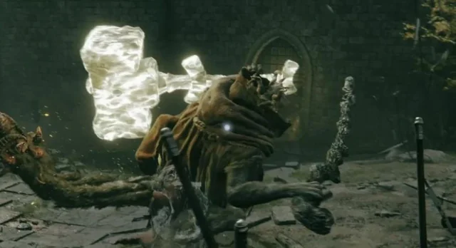

Read the Delays
Margit holds his staff swing at a delayed timing in order to make you dodge or parry early and get punished for moving too fast. Roll back and time the attack before attempting to counter it at close range.
Margit the Fell Omen.
A focused guide for defeating Margit at the gates of Stormveil Castle.
See the strategyMargit holds his staff swing at a delayed timing in order to make you dodge or parry early and get punished for moving too fast. Roll back and time the attack before attempting to counter it at close range.
Jump attacks break his stance faster. This staggers him and opens him up for a critical hit.
This item pins him to the ground for free hits if you need a crutch or want a faster fight. You can use the shackle twice in one fight.
At half health, Margit has a cutscene and adds a glowing golden hammer to his attacks. This creates new attack animations and timing that you need to learn and counter to defeat him. The hammer slams deal more damage but are also slow, so back off when he raises it and strike after it lands.

Buy Margit's Shackle from Patches, a merchant hidden in Murkwater Cave in Limgrave.
Find Margit's ShackleSorcerer Rogier's summon sign is just outside the fog gate that starts the fight. Standing over the sign lets you add him as an NPC ally who attacks Margit with you. This gives you time to watch how Margit attacks, and to retreat and heal mid-battle if you make a mistake.
Learn about Sorcerer Rogier